進化å¦å®Ÿç¿’ 2025 牧é‡ç ” æ±åŒ—大å¦
- å°å…¥: データ解æã®å…¨ä½“åƒã€‚Rã®åŸºæœ¬ã€‚
- データã®å¯è¦–化。
- ãƒ‡ãƒ¼ã‚¿æ§‹é€ ã®å‡¦ç†1: 抽出ã€é›†ç´„ãªã©ã€‚
- ãƒ‡ãƒ¼ã‚¿æ§‹é€ ã®å‡¦ç†2: çµåˆã€å¤‰å½¢ãªã©ã€‚
- データ内容ã®å‡¦ç†: 数値ã€æ–‡å—列ãªã©ã€‚
- データ入力ã€ãƒ¬ãƒãƒ¼ãƒˆä½œæˆ
- 統計モデリング1: 確ç‡åˆ†å¸ƒã€å°¤åº¦
- 統計モデリング2: 一般化線形モデル
- 発表会
https://heavywatal.github.io/slides/tohoku2025r/
データ解æã®ãŠãŠã¾ã‹ãªæµã‚Œ
- コンピュータ環境ã®æ•´å‚™ ✅
- データã®å–å¾—ã€èªã¿è¾¼ã¿ ⬜
- æ¢ç´¢çš„データ解æ
- å‰å‡¦ç†ã€åŠ å·¥ (地味。æ„外ã¨é‡ã„) ⬜ 次å›
- å¯è¦–化ã€ä»®èª¬ç”Ÿæˆ (派手ï¼æ¥½ã—ã„ï¼) ⬜ 👈今å›
- 統計解æã€ä»®èª¬æ¤œè¨¼ (ã¿ã‚“ãªå‹‰å¼·ã—ãŸãŒã‚‹) ⬜
- å ±å‘Šã€ç™ºè¡¨ ⬜ Quarto楽ã—ã„

作図ã—ã¦ã¿ã‚‹ã¨å…¨ä½“åƒãƒ»æ§‹é€ ãŒè¦‹ã‚„ã™ã„
æƒ…å ±ã®æ•´ç† → æ£ã—ã„解æ・新ã—ã„発見・仮説生æˆ
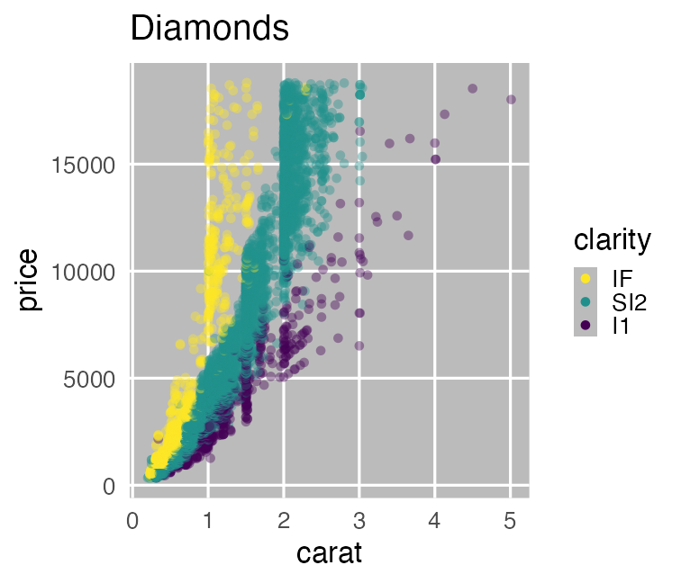carat ãŒå¤§ãã„ã»ã© price も高ã„らã—ã„。
ãã®åº¦åˆã„㯠clarity ã«ã‚ˆã£ã¦ç•°ãªã‚‹ã‚‰ã—ã„。
代表値ã°ã‹ã‚Šè¦‹ã¦å¯è¦–åŒ–ã‚’æ€ ã‚‹ã¨æ§‹é€ を見逃ã™


ãã†ã¯è¨€ã£ã¦ã‚‚センスã§ã—ょ? — NO!


ã‚る程度ã¯ãƒ†ã‚¯ãƒ‹ãƒƒã‚¯ã§ã‚り教養。
デザインã®åŸºæœ¬çš„ãªãƒ«ãƒ¼ãƒ«ã‚’
知りã•ãˆã™ã‚Œã°èª°ã§ã‚‚上é”ã™ã‚‹ã€‚
ãŠã—ãªãŒã: Rã«ã‚ˆã‚‹ãƒ‡ãƒ¼ã‚¿å¯è¦–化
✅ データ解æ全体ã®æµã‚Œã€‚å¯è¦–化ã ã„ã˜
⬜ 一貫性ã®ã‚る文法ã§åˆç†çš„ã«æã‘ã‚‹ggplot2
iris: アヤメå±3種150個体ã®æ¸¬å®šãƒ‡ãƒ¼ã‚¿
Rã«æœ€åˆã‹ã‚‰å…¥ã£ã¦ã¦ã€ä¾‹ã¨ã—ã¦ã‚ˆã使ã‚れる。
print(iris)
Sepal.Length Sepal.Width Petal.Length Petal.Width Species
1 5.1 3.5 1.4 0.2 setosa
2 4.9 3.0 1.4 0.2 setosa
3 4.7 3.2 1.3 0.2 setosa
4 4.6 3.1 1.5 0.2 setosa
--
147 6.3 2.5 5.0 1.9 virginica
148 6.5 3.0 5.2 2.0 virginica
149 6.2 3.4 5.4 2.3 virginica
150 5.9 3.0 5.1 1.8 virginica
é•·ã•150ã®æ•°å€¤ãƒ™ã‚¯ãƒˆãƒ«4本ã¨å› åベクトル1本。
R標準ã®ã‚°ãƒ©ãƒ•ã‚£ãƒƒã‚¯ã‚¹
æã‘ã‚‹ã£ã¡ã‚ƒæã‘ã‚‹ã‘ã©ã€‚カスタãƒã‚¤ã‚ºã—ã¦ã„ãã®ã¯é›£ã—ã„。
boxplot(Petal.Width ~ Species, data = iris)
plot(iris$Sepal.Length, iris$Sepal.Width)
hist(iris$Petal.Length)
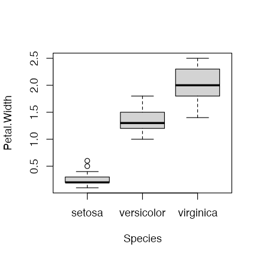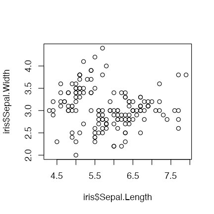
ãã‚Œã„ãªã‚°ãƒ©ãƒ•ã‚’ç°¡å˜ã«æã‘るパッケージを使ã„ãŸã„。
ggplot2: tidyverseã®å¯è¦–化担当

- “The Grammar of Graphics” ã¨ã„ã†ä½“ç³»ã«åŸºã¥ãè¨è¨ˆ
- å˜ã«ã„ã‚ã‚“ãªã‚°ãƒ©ãƒ•ã‚’「æã‘ã‚‹ã€ã ã‘ã˜ã‚ƒãªã
一貫性ã®ã‚る文法ã§åˆç†çš„ã«æã‘ã‚‹
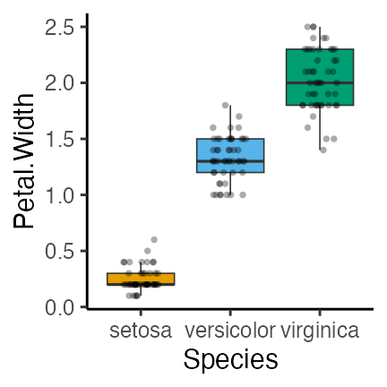 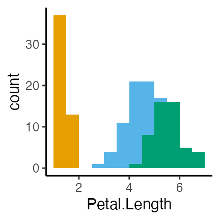
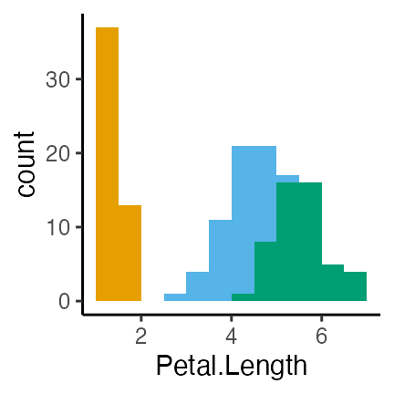
ggplot2: tidyverseã®å¯è¦–化担当
- “The Grammar of Graphics” ã¨ã„ã†ä½“ç³»ã«åŸºã¥ãè¨è¨ˆ
- å˜ã«ã„ã‚ã‚“ãªã‚°ãƒ©ãƒ•ã‚’「æã‘ã‚‹ã€ã ã‘ã˜ã‚ƒãªã
一貫性ã®ã‚る文法ã§åˆç†çš„ã«æã‘ã‚‹


ã„ããªã‚Šggplot2ã‹ã‚‰ä½¿ã„始ã‚ã¦ã‚‚大丈夫
R標準ã®ã‚„ã¤ã¨ã¯æ ¹æœ¬çš„ã«é•ã†ã‚·ã‚¹ãƒ†ãƒ ã§ä½œå›³ã™ã‚‹ã€‚

基本的ãªä½¿ã„æ–¹: 指示を + ã§é‡ãã¦ã„ã

基本的ãªä½¿ã„æ–¹: 指示を + ã§é‡ãã¦ã„ã
ggplot(data = diamonds) # diamondsデータã§ã‚ャンãƒã‚¹æº–å‚™
# aes(x = carat, y = price) + # carat,price列をx,y軸ã«mapping
# geom_point() + # 散布図をæã
# stat_smooth(method = lm) + # ç›´ç·šå›å¸°ã‚’追åŠ
# facet_wrap(vars(clarity)) + # clarity列ã«å¿œã˜ã¦ãƒ‘ãƒãƒ«åˆ†å‰²
# coord_cartesian(ylim = c(0, 2e4)) + # y軸ã®è¡¨ç¤ºç¯„囲をç‹ã
# theme_classic(base_size = 20) # クラシックãªãƒ†ãƒ¼ãƒã§
基本的ãªä½¿ã„æ–¹: 指示を + ã§é‡ãã¦ã„ã
ggplot(data = diamonds) + # diamondsデータã§ã‚ャンãƒã‚¹æº–å‚™
aes(x = carat, y = price) # carat,price列をx,y軸ã«mapping
# geom_point() + # 散布図をæã
# stat_smooth(method = lm) + # ç›´ç·šå›å¸°ã‚’追åŠ
# facet_wrap(vars(clarity)) + # clarity列ã«å¿œã˜ã¦ãƒ‘ãƒãƒ«åˆ†å‰²
# coord_cartesian(ylim = c(0, 2e4)) + # y軸ã®è¡¨ç¤ºç¯„囲をç‹ã
# theme_classic(base_size = 20) # クラシックãªãƒ†ãƒ¼ãƒã§
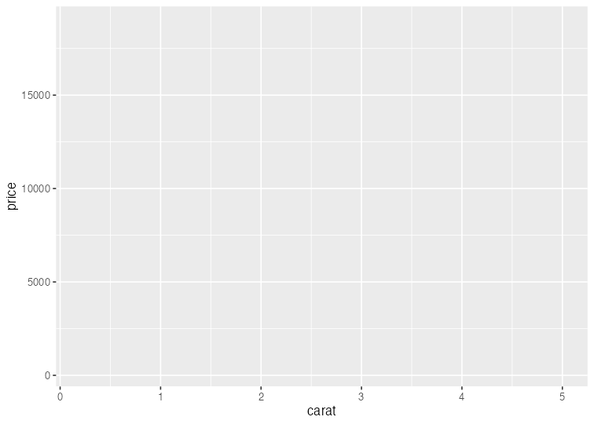
基本的ãªä½¿ã„æ–¹: 指示を + ã§é‡ãã¦ã„ã
ggplot(data = diamonds) + # diamondsデータã§ã‚ャンãƒã‚¹æº–å‚™
aes(x = carat, y = price) + # carat,price列をx,y軸ã«mapping
geom_point() # 散布図をæã
# stat_smooth(method = lm) + # ç›´ç·šå›å¸°ã‚’追åŠ
# facet_wrap(vars(clarity)) + # clarity列ã«å¿œã˜ã¦ãƒ‘ãƒãƒ«åˆ†å‰²
# coord_cartesian(ylim = c(0, 2e4)) + # y軸ã®è¡¨ç¤ºç¯„囲をç‹ã
# theme_classic(base_size = 20) # クラシックãªãƒ†ãƒ¼ãƒã§
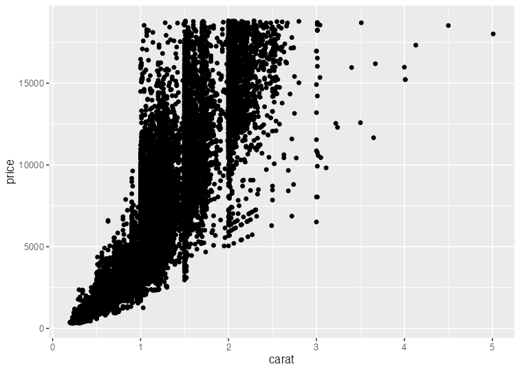
基本的ãªä½¿ã„æ–¹: 指示を + ã§é‡ãã¦ã„ã
ggplot(data = diamonds) + # diamondsデータã§ã‚ャンãƒã‚¹æº–å‚™
aes(x = carat, y = price) + # carat,price列をx,y軸ã«mapping
geom_point() + # 散布図をæã
stat_smooth(method = lm) # ç›´ç·šå›å¸°ã‚’追åŠ
# facet_wrap(vars(clarity)) + # clarity列ã«å¿œã˜ã¦ãƒ‘ãƒãƒ«åˆ†å‰²
# coord_cartesian(ylim = c(0, 2e4)) + # y軸ã®è¡¨ç¤ºç¯„囲をç‹ã
# theme_classic(base_size = 20) # クラシックãªãƒ†ãƒ¼ãƒã§
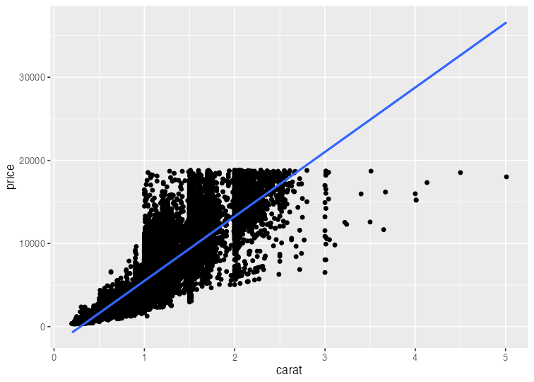
基本的ãªä½¿ã„æ–¹: 指示を + ã§é‡ãã¦ã„ã
ggplot(data = diamonds) + # diamondsデータã§ã‚ャンãƒã‚¹æº–å‚™
aes(x = carat, y = price) + # carat,price列をx,y軸ã«mapping
geom_point() + # 散布図をæã
stat_smooth(method = lm) + # ç›´ç·šå›å¸°ã‚’追åŠ
facet_wrap(vars(clarity)) # clarity列ã«å¿œã˜ã¦ãƒ‘ãƒãƒ«åˆ†å‰²
# coord_cartesian(ylim = c(0, 2e4)) + # y軸ã®è¡¨ç¤ºç¯„囲をç‹ã
# theme_classic(base_size = 20) # クラシックãªãƒ†ãƒ¼ãƒã§
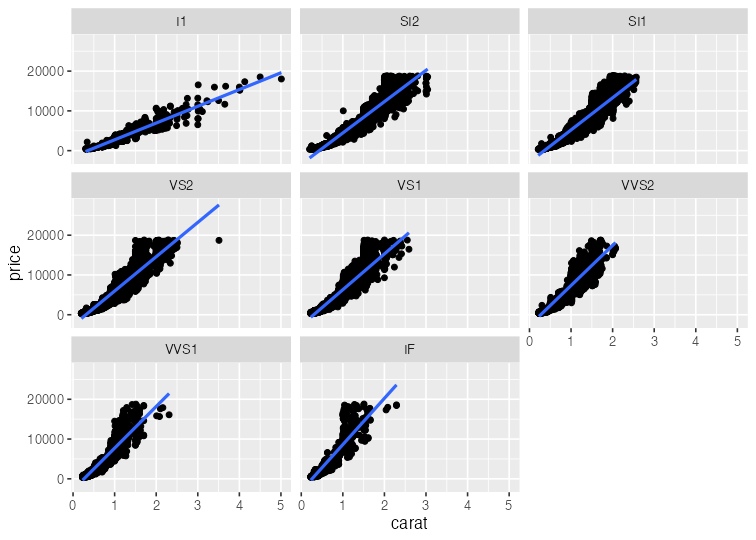
基本的ãªä½¿ã„æ–¹: 指示を + ã§é‡ãã¦ã„ã
ggplot(data = diamonds) + # diamondsデータã§ã‚ャンãƒã‚¹æº–å‚™
aes(x = carat, y = price) + # carat,price列をx,y軸ã«mapping
geom_point() + # 散布図をæã
stat_smooth(method = lm) + # ç›´ç·šå›å¸°ã‚’追åŠ
facet_wrap(vars(clarity)) + # clarity列ã«å¿œã˜ã¦ãƒ‘ãƒãƒ«åˆ†å‰²
coord_cartesian(ylim = c(0, 2e4)) # y軸ã®è¡¨ç¤ºç¯„囲をç‹ã
# theme_classic(base_size = 20) # クラシックãªãƒ†ãƒ¼ãƒã§
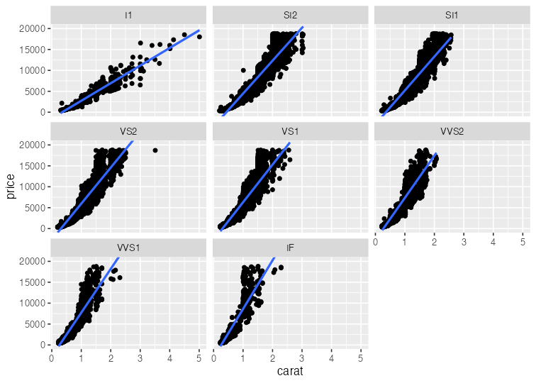
基本的ãªä½¿ã„æ–¹: 指示を + ã§é‡ãã¦ã„ã
ggplot(data = diamonds) + # diamondsデータã§ã‚ャンãƒã‚¹æº–å‚™
aes(x = carat, y = price) + # carat,price列をx,y軸ã«mapping
geom_point() + # 散布図をæã
stat_smooth(method = lm) + # ç›´ç·šå›å¸°ã‚’追åŠ
facet_wrap(vars(clarity)) + # clarity列ã«å¿œã˜ã¦ãƒ‘ãƒãƒ«åˆ†å‰²
coord_cartesian(ylim = c(0, 2e4)) + # y軸ã®è¡¨ç¤ºç¯„囲をç‹ã
theme_classic(base_size = 20) # クラシックãªãƒ†ãƒ¼ãƒã§
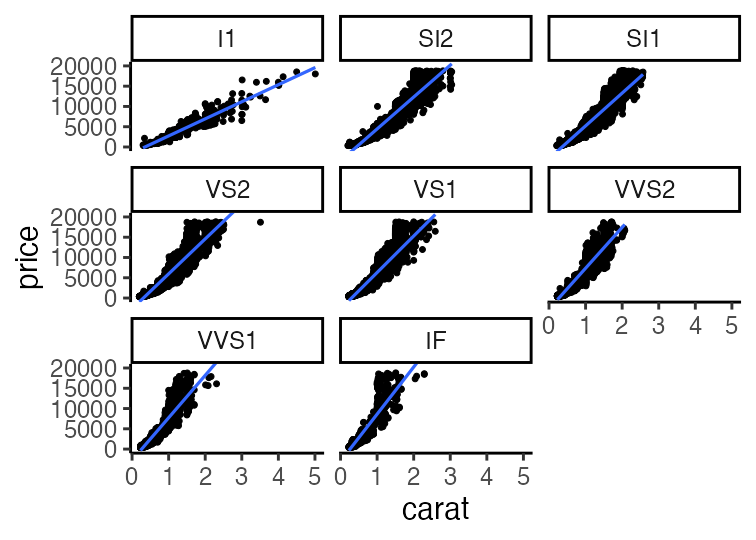
基本的ãªä½¿ã„æ–¹: 指示を + ã§é‡ãã¦ã„ã
ggplot(data = diamonds) + # diamondsデータã§ã‚ャンãƒã‚¹æº–å‚™
aes(x = carat, y = price) + # carat,price列をx,y軸ã«mapping
geom_point() + # 散布図をæã
# stat_smooth(method = lm) + # ç›´ç·šå›å¸°ã‚’追åŠ
# facet_wrap(vars(clarity)) + # clarity列ã«å¿œã˜ã¦ãƒ‘ãƒãƒ«åˆ†å‰²
# coord_cartesian(ylim = c(0, 2e4)) + # y軸ã®è¡¨ç¤ºç¯„囲をç‹ã
theme_classic(base_size = 20) # クラシックãªãƒ†ãƒ¼ãƒã§
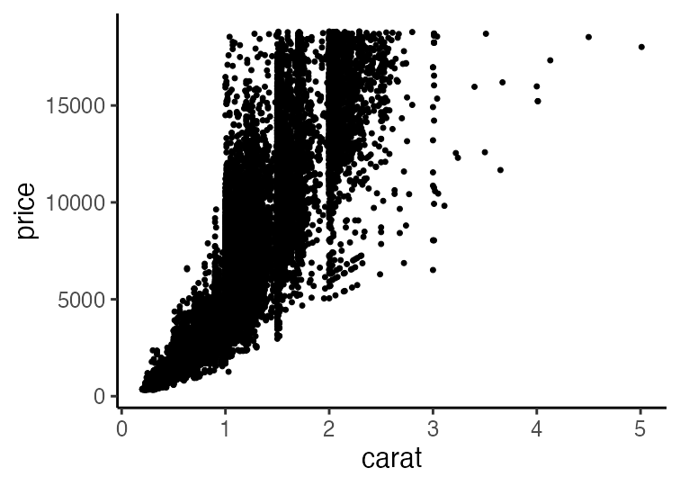
途ä¸çµŒéオブジェクトをå–ã£ã¦ãŠã‘ã‚‹
p1 = ggplot(data = diamonds)
p2 = p1 + aes(x = carat, y = price)
p3 = p2 + geom_point()
p4 = p3 + facet_wrap(vars(clarity))
print(p3)
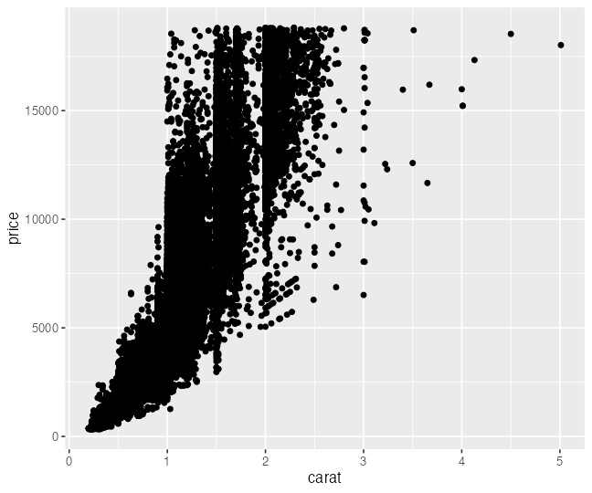
ã“ã® p3 ã¯å¾Œã§ä½¿ã„ã¾ã™ã€‚
ã²ã¨ã¾ãšggplotã—ã¦ã¿ã‚ˆã†
自動車ã®ã‚¹ãƒšãƒƒã‚¯ã«é–¢ã™ã‚‹ãƒ‡ãƒ¼ã‚¿ mpg を使ã£ã¦ã€‚
manufacturer model displ year cyl trans drv cty hwy fl class
1 audi a4 1.8 1999 4 auto(l5) f 18 29 p compact
2 audi a4 1.8 1999 4 manual(m5) f 21 29 p compact
--
233 volkswagen passat 2.8 1999 6 manual(m5) f 18 26 p midsize
234 volkswagen passat 3.6 2008 6 auto(s6) f 17 26 p midsize
🔰 æ’æ°—é‡ displ ã¨å¸‚街地燃費 cty ã®é–¢ä¿‚を散布図ã§ã€‚
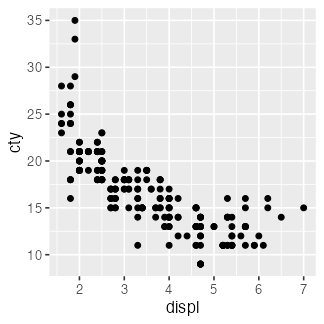
よãã‚るエラー
関数åã‚’ ggplot2 ã¨æ›¸ã„ã¡ã‚ƒã†ã¨å‹˜é•ã„:
> ggplot2(diamonds)
Error in ggplot2(diamonds) : could not find function "ggplot2"
ggplot2 ã¯ãƒ‘ッケージå。
今度ã“ã関数åã¯åˆã£ã¦ã‚‹ã¯ãšãªã®ã«…
> ggplot(diamonds)
Error in ggplot(diamonds) : could not find function "ggplot"
パッケージèªã¿è¾¼ã¿ã‚’忘れã¦ãŸã€‚æ–°ã—ãRã‚’èµ·å‹•ã™ã‚‹ãŸã³ã«å¿…è¦:
library(conflicted) # 安全ã®ãŠã¾ã˜ãªã„
library(tidyverse) # including ggplot2
ggplot(diamonds) # OK!
ãã®ã»ã‹ よãã‚るエラー集 (石å·ç”±å¸Œã•ã‚“@åå¤å±‹å¤§) ã‚’å‚照。
ggplot() ã«æ¸¡ã™ã®ã¯æ•´ç„¶ãƒ‡ãƒ¼ã‚¿ tidy data
- 1è¡Œã¯1ã¤ã®è¦³æ¸¬
- 1列ã¯1ã¤ã®å¤‰æ•°
- 1セルã¯1ã¤ã®å€¤
- ã“ã®åˆ—ã‚’X軸ã€ã“ã®åˆ—ã‚’Y軸ã€ã“ã®åˆ—ã§è‰²ã‚ã‘ã€ã¨æŒ‡å®šã§ãã‚‹ï¼
print(diamonds)
carat cut color clarity depth table price x y z
1 0.23 Ideal E SI2 61.5 55 326 3.95 3.98 2.43
2 0.21 Premium E SI1 59.8 61 326 3.89 3.84 2.31
3 0.23 Good E VS1 56.9 65 327 4.05 4.07 2.31
4 0.29 Premium I VS2 62.4 58 334 4.20 4.23 2.63
--
53937 0.72 Good D SI1 63.1 55 2757 5.69 5.75 3.61
53938 0.70 Very Good D SI1 62.8 60 2757 5.66 5.68 3.56
53939 0.86 Premium H SI2 61.0 58 2757 6.15 6.12 3.74
53940 0.75 Ideal D SI2 62.2 55 2757 5.83 5.87 3.64
https://r4ds.hadley.nz/data-tidy.html; https://speakerdeck.com/fnshr/zheng-ran-detatutenani
Aesthetic mapping ã§ãƒ‡ãƒ¼ã‚¿ã¨è¦‹ã›æ–¹ã‚’ç´ä»˜ã‘
aes() ã®ä¸ã§åˆ—åを指定ã™ã‚‹ã€‚
ggplot(diamonds) +
aes(x = carat, y = price) +
geom_point(mapping = aes(color = clarity, size = cut))
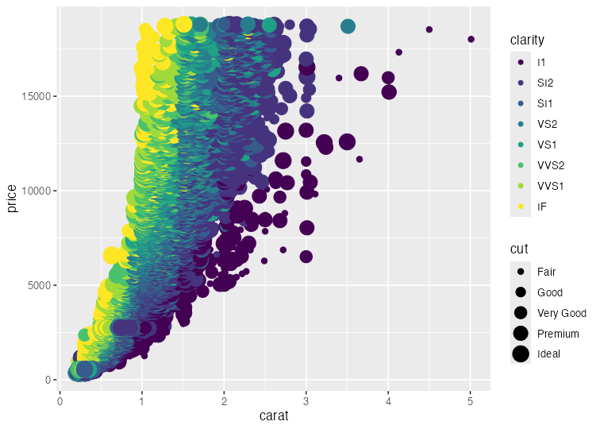
データã«ã‚ˆã‚‰ãšä¸€å¾‹ã§aestheticsを変ãˆã‚‹
aes() ã®å¤–ã§å€¤ã‚’指定ã™ã‚‹ã€‚
ggplot(diamonds) +
aes(x = carat, y = price) +
geom_point(color = "darkorange", size = 6, alpha = 0.4)
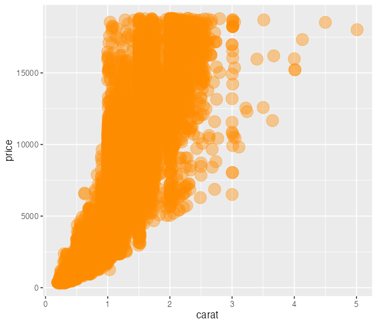
外㮠aes() ã¯å…¨ã¦ã® geom_*() ã«æ³¢åŠã™ã‚‹
ggplot(diamonds) +
aes(x = carat, y = price) +
geom_point(aes(color = clarity)) +
geom_line() # NO color
ggplot(diamonds) +
aes(x = carat, y = price, color = clarity) +
geom_point() + # color
geom_line() # color
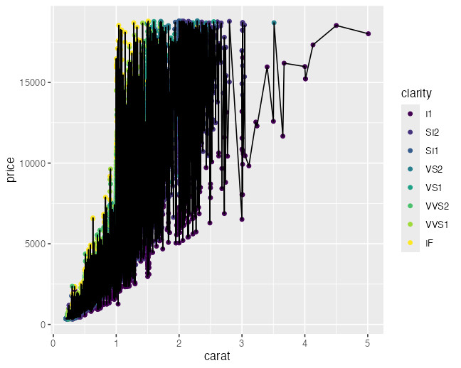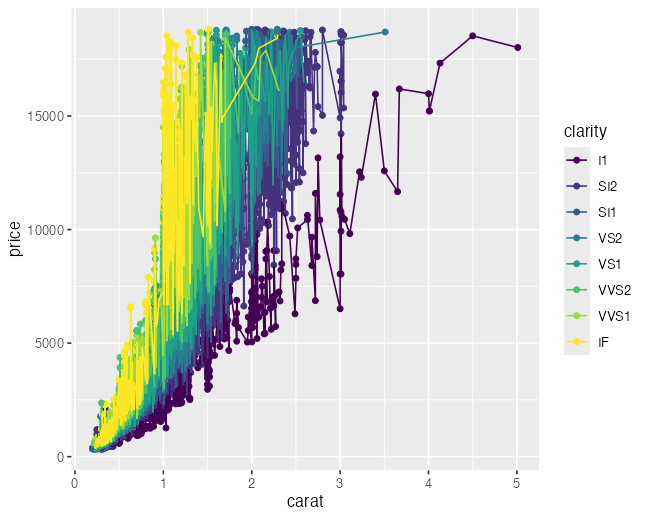
aesthetics一覧
- 色・é€æ˜åº¦ã‚’変ãˆã‚‹
color: 点ã€ç·šã€æ–‡å—ã®è‰²fill: é¢ã®è‰²alpha: ä¸é€æ˜åº¦ (0ãŒé€æ˜ã€1ãŒä¸é€æ˜)
- 大ãã•ãƒ»å½¢ã‚’変ãˆã‚‹
- å˜ã«ã‚°ãƒ«ãƒ¼ãƒ—分ã‘ã™ã‚‹
group: 折れ線グラフやãƒãƒªã‚´ãƒ³ã®åˆ‡ã‚Šåˆ†ã‘ãªã©
- 座標ã€å§‹ç‚¹ã€çµ‚点
x,y,xmin,xmax,ymin,ymax,xend,yend
点ã¨ç·šã¨æ–‡å—㯠color, é¢ã¯ fill
ä¸é€æ˜åº¦ã¯ alpha
ggplot(diamonds) +
aes(cut, carat) +
geom_boxplot(color = "royalblue", fill = "gold", alpha = 0.5, linewidth = 2)
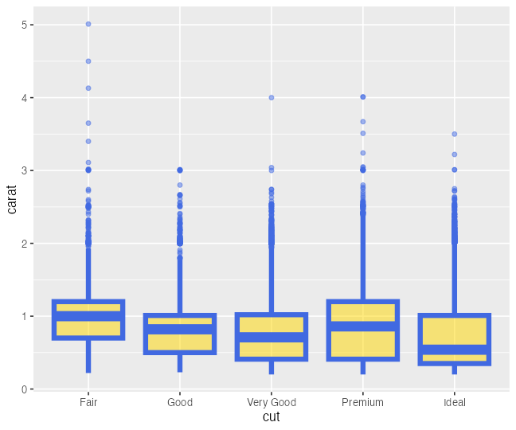
色ã®å¤‰ãˆæ–¹ã®ç·´ç¿’
自動車ã®ã‚¹ãƒšãƒƒã‚¯ã«é–¢ã™ã‚‹ãƒ‡ãƒ¼ã‚¿ mpg を使ã£ã¦ã€‚
manufacturer model displ year cyl trans drv cty hwy fl class
1 audi a4 1.8 1999 4 auto(l5) f 18 29 p compact
2 audi a4 1.8 1999 4 manual(m5) f 21 29 p compact
--
233 volkswagen passat 2.8 1999 6 manual(m5) f 18 26 p midsize
234 volkswagen passat 3.6 2008 6 auto(s6) f 17 26 p midsize
🔰 æ’æ°—é‡ displ ã¨å¸‚街地燃費 cty ã®é–¢ä¿‚ã‚’é’ã„散布図ã§æã“ã†
🔰 é§†å‹•æ–¹å¼ drv やシリンダー数 cyl ã«ã‚ˆã£ã¦è‰²ã‚’塗り分ã‘ã—ã¦ã¿ã‚ˆã†
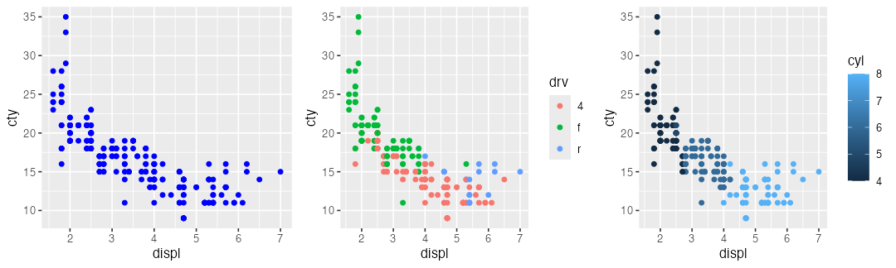
色ã®è¦‹ãˆæ–¹ã¯äººã«ã‚ˆã£ã¦é•ã†
赤
ç·‘
é’ã®3色を使ã£ãŸå…ˆã»ã©ã®å›³ã¯å¤šãã®äººã«ã¯å•é¡Œãªã•ãã†ã€‚
ã—ã‹ã—5%ãらã„ã®äººã«ã¯å³ã®ã‚ˆã†ã«
赤
ç·‘
é’ ã‚„
赤
ç·‘
é’ã®2色ã«è¦‹ãˆã¦ã„る。
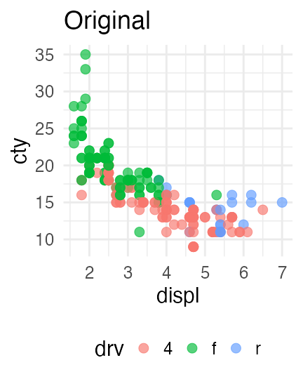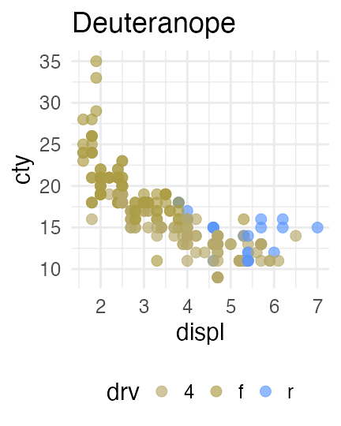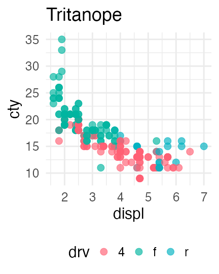
Macã‚„iOSãªã‚‰Sim Daltonismã¨ã„ã†ã‚¢ãƒ—リã§ã‚·ãƒŸãƒ¥ãƒ¬ãƒ¼ã‚·ãƒ§ãƒ³ã§ãる。
Windowsãªã‚‰Color OracleãŒä½¿ãˆãã†ã€‚
多様性をå‰æã«ã‚ˆã考ãˆã‚‰ã‚ŒãŸãƒ‘レットもã‚ã‚‹
Sequential palette:
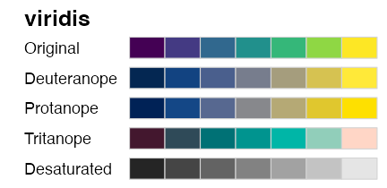

Diverging palette:


Qualitative (categorical, discrete) palette:
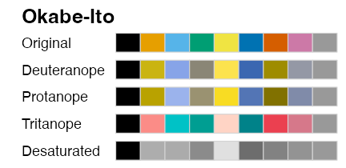 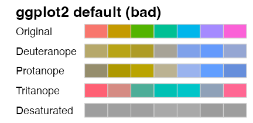
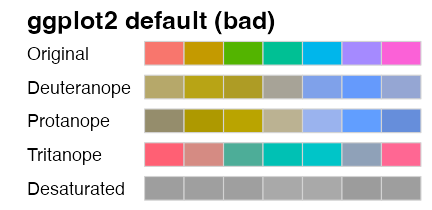
色パレットã®å¤‰æ›´ scale_color_*()
viridis
ã¨
ColorBrewer
ã®ãƒ‘レットã¯ggplot2ã«çµ„ã¿è¾¼ã¾ã‚Œã¦ã„ã‚‹ã®ã§ç°¡å˜ã€‚
上記リンクã‹ã‚‰åå‰ã‚’æ¢ã—ã¦ã€option = ã‹ palette = ã§æŒ‡å®šã€‚
p = ggplot(diamonds) + aes(carat, price) +
geom_point(mapping = aes(color = clarity))
p + scale_color_viridis_d(option = "inferno") + labs(title = "inferno")
p + scale_color_brewer(palette = "YlGnBu") + labs(title = "YlGnBu")
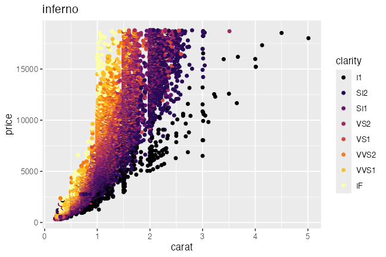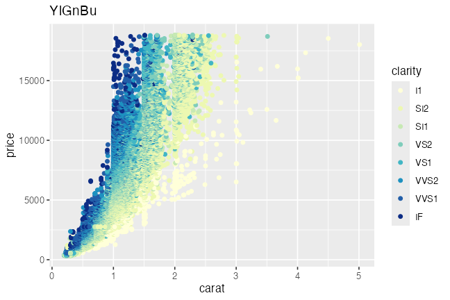
連続値(continuous)ã¨é›¢æ•£å€¤(discrete)を区別ã™ã‚‹
渡ã™å€¤ã¨scale関数ãŒåˆã£ã¦ãªã„ã¨æ€’られる:
Error: Continuous value supplied to discrete scale
p = ggplot(diamonds) + aes(carat, price) +
geom_point(mapping = aes(color = price))
p + scale_color_viridis_c(option = "inferno") + labs(title = "inferno")
p + scale_color_distiller(palette = "YlGnBu") + labs(title = "YlGnBu")
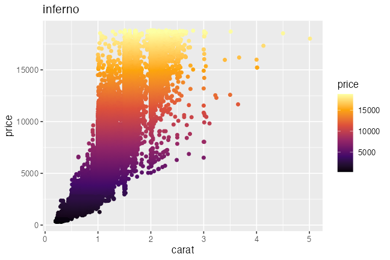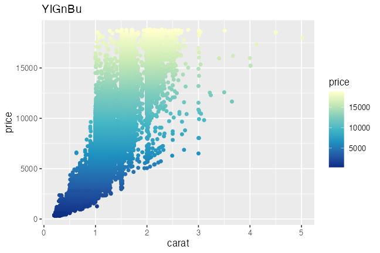
- discrete:
scale_color_viridis_d(),scale_color_brewer() - continuous:
scale_color_viridis_c(),scale_color_distiller() - binned:
scale_color_viridis_b(),scale_color_fermenter()
viridisã‚„brewer以外ã®ãƒ‘レットを使ã†ã«ã¯
R標準㮠palette.colors() や
colorspaceパッケージ
を使ã†ã€‚
p = ggplot(mpg) +
aes(x = displ, y = cty) +
geom_point(aes(color = drv), size = 4, alpha = 0.66)
p + scale_color_discrete(type = palette.colors(9L, "Okabe-Ito")[-1]) + labs(title = "Okabe-Ito")
p + scale_color_discrete(type = palette.colors(8L, "R4")[-1]) + labs(title = "R4")
p + colorspace::scale_colour_discrete_divergingx("Zissou 1") + labs(title = "Zissou 1")
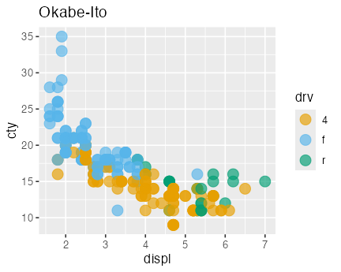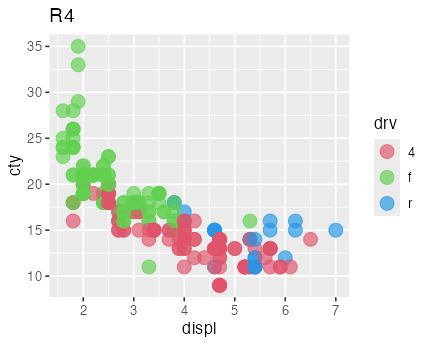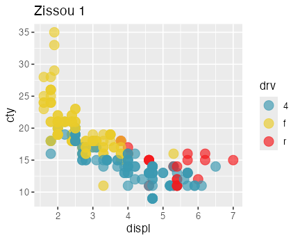
自分ã§å…¨è‰²å€‹åˆ¥æŒ‡å®šã‚‚ã§ãã‚‹ãŒã€å°‚門家ã®è€ƒãˆãŸã‚»ãƒƒãƒˆã‚’使ã†ã®ãŒç„¡é›£ã€‚
scale_color_* ã‚’çœç•¥ã§ãるよã†ã«è¨å®šå¯èƒ½
連続値viridis, 離散値Okabe-Itoをデフォルトã«ã™ã‚‹ä¾‹:
grDevices::palette("Okabe-Ito")
options(
ggplot2.continuous.colour = "viridis",
ggplot2.continuous.fill = "viridis",
ggplot2.discrete.colour = grDevices::palette()[-1],
ggplot2.discrete.fill = grDevices::palette()[-1]
)
options() ã«ã‚ˆã‚‹è¨å®šã¯Rを終了ã™ã‚‹ã¾ã§æœ‰åŠ¹ã€‚
スクリプトã®å…ˆé ã«æ›¸ã„ã¦ãŠã„ã¦æ¯å›è¨å®šã™ã‚‹ã“ã¨ã‚’æ¨å¥¨ã€‚
値ã«å¿œã˜ã¦ãƒ‘ãƒãƒ«åˆ‡ã‚Šåˆ†ã‘ (1変数facet)
ggplotã®çœŸéª¨é ‚ï¼ ã“れをR標準機能ã§ã‚„ã‚‹ã®ã¯çµæ§‹ãŸã„ã¸ã‚“。
p3 + facet_wrap(vars(clarity), ncol = 4L)
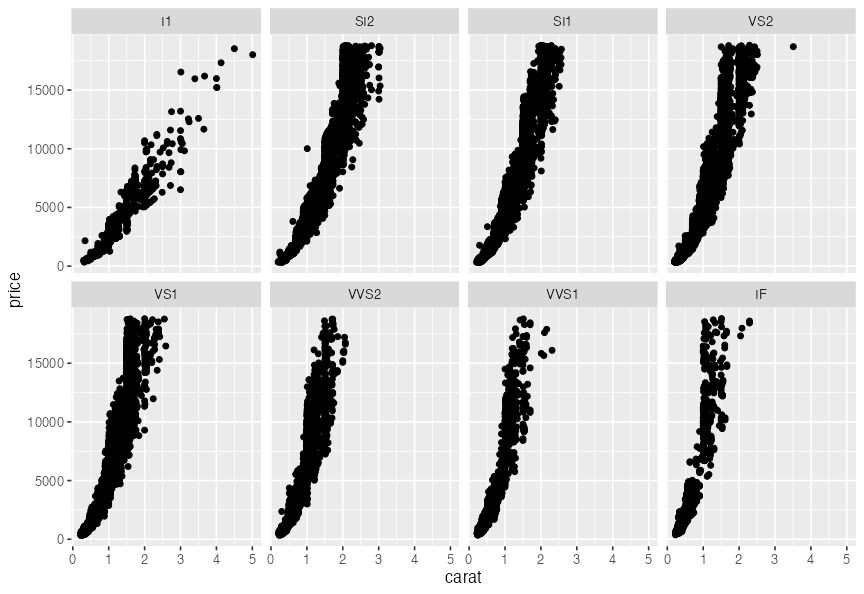
値ã«å¿œã˜ã¦ãƒ‘ãƒãƒ«åˆ‡ã‚Šåˆ†ã‘ (≥2変数facet)
ggplotã®çœŸéª¨é ‚ï¼ ã“れをR標準機能ã§ã‚„ã‚‹ã®ã¯çµæ§‹ãŸã„ã¸ã‚“。
p3 + facet_grid(vars(clarity), vars(cut))
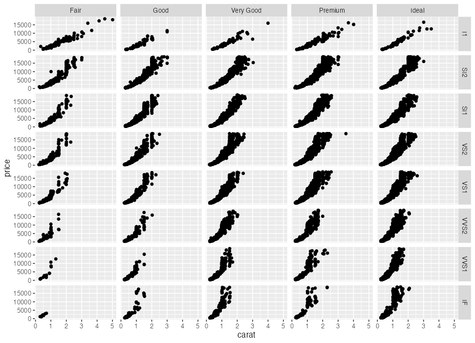
多変é‡ãƒ‡ãƒ¼ã‚¿ã®ä¿¯ç°ã€5次元ãらã„ã¾ã§æœ‰åŠ¹
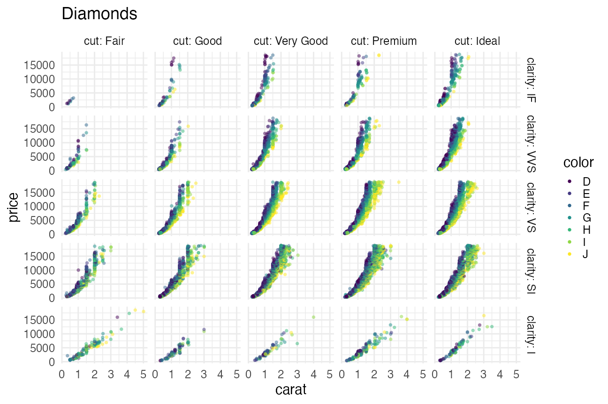
値ã«å¿œã˜ãŸfacetã®ç·´ç¿’
自動車ã®ã‚¹ãƒšãƒƒã‚¯ã«é–¢ã™ã‚‹ãƒ‡ãƒ¼ã‚¿ mpg を使ã£ã¦ã€‚
manufacturer model displ year cyl trans drv cty hwy fl class
1 audi a4 1.8 1999 4 auto(l5) f 18 29 p compact
2 audi a4 1.8 1999 4 manual(m5) f 21 29 p compact
--
233 volkswagen passat 2.8 1999 6 manual(m5) f 18 26 p midsize
234 volkswagen passat 3.6 2008 6 auto(s6) f 17 26 p midsize
🔰 é§†å‹•æ–¹å¼ drv やシリンダー数 cyl ã«ã‚ˆã£ã¦facetã—ã¦ã¿ã‚ˆã†
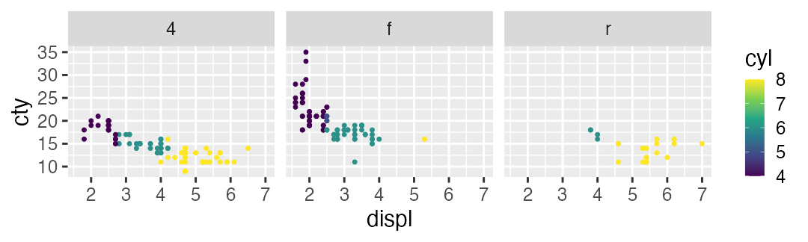
値を変ãˆãšåº§æ¨™è»¸ã‚’変ãˆã‚‹ scale_*, coord_*
ggplot(diamonds) + aes(carat, price) + geom_point(alpha = 0.25) +
scale_x_log10() +
scale_y_log10(breaks = c(1, 2, 5, 10) * 1000) +
coord_cartesian(xlim = c(0.1, 10), ylim = c(800, 12000)) +
labs(title = "Diamonds", x = "Size (carat)", y = "Price (USD)")
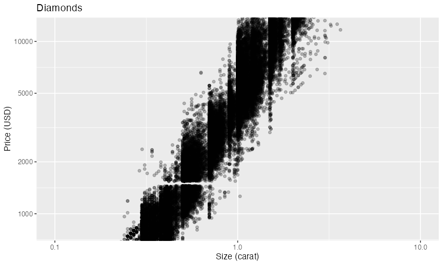
データã¨é–¢ä¿‚ãªã„部分ã®è¦‹ãŸç›®ã‚’調整 theme
æ—¢å˜ã® theme_*()
をベースã«ã€theme()関数ã§å¾®èª¿æ•´ã€‚
p3 + theme_bw(base_size = 20) + theme(
panel.background = element_rect(fill = "khaki"), # ç®±
panel.grid = element_line(color = "royalblue"), # ç·š
axis.title.x = element_text(size = 32), # æ–‡å—
axis.text.y = element_blank() # 消ã™
)
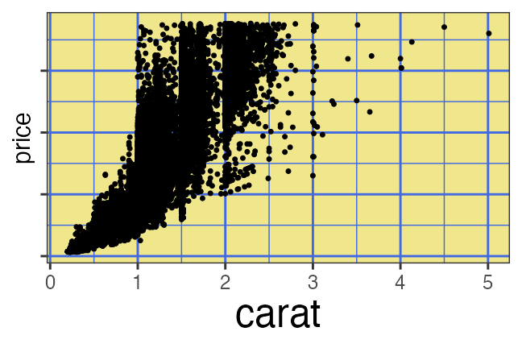
基本的ãªä½¿ã„æ–¹: 指示を + ã§é‡ãã¦ã„ã
è«–æ–‡ã®Figureã¿ãŸã„ã«ä¸¦ã¹ã‚‹
別ã®ãƒ‘ッケージ (cowplot ã‚„ patchwork) ã®åŠ©ã‘を借りã¦
pAB = cowplot::plot_grid(p3, p3, labels = c("A", "B"), nrow = 1L)
cowplot::plot_grid(pAB, p3, labels = c("", "C"), ncol = 1L)
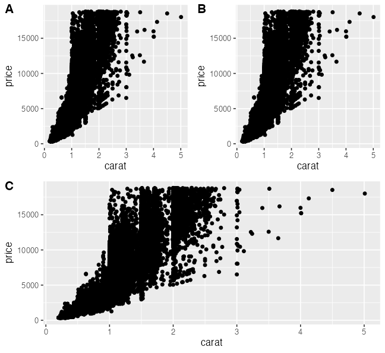
ファイルåもサイズもå†ç¾å¯èƒ½ãªä½œå›³
widthã‚„heightãŒå°ã•ã„ã»ã©ã€æ–‡å—・点・線ãŒç›¸å¯¾çš„ã«å¤§ãã
# 7inch x 300dpi = 2100px四方 (デフォルト)
ggsave("dia1.png", p3) # width = 7, height = 7, dpi = 300
# 4 x 300 = 1200 全体7/4å€ã‚ºãƒ¼ãƒ
ggsave("dia2.png", p3, width = 4, height = 4) # dpi = 300
# 2 x 600 = 1200 全体をã•ã‚‰ã«2å€ã‚ºãƒ¼ãƒ
ggsave("dia3.png", p3, width = 2, height = 2, dpi = 600)
# 4 x 300 = 1200 テーãƒã‚’使ã£ã¦æ–‡å—ã ã‘拡大
ggsave("dia4.png", p3 + theme_bw(base_size = 22), width = 4, height = 4)


日本èªãŒâ—»ï¸â—»ï¸â—»ï¸è±†è…ã«ãªã‚‰ãªã„ãŸã‚ã®è¨å®š
環境è¨å®š → General → Graphics → Backend: AGG

英数å—以外を使ã‚ãšã«æ¸ˆã¾ã›ã‚‰ã‚Œã‚Œã°ãã‚Œã«è¶Šã—ãŸã“ã¨ã¯ãªã„ã‘ã©…
ä»–ã«ã©ã‚“ãªç¨®é¡ã® geom_*() ãŒä½¿ãˆã‚‹ï¼Ÿ
ãªã‚“ã§ã‚‚ã‚る。 å…¬å¼ã‚µã‚¤ãƒˆã‚’見ã«è¡Œã“ã†ã€‚


微調整ã—ã¦ãã¨æœ€çµ‚çš„ã«é•·ã„コードã«ãªã‚‹ã…
ã†ã‚“。ã§ã‚‚ã™ã¹ã¦ã®ç‚¹ã«ã¤ã„ã¦å¾Œã‹ã‚‰ç¢ºèªã§ãã‚‹ã—ã€ä½¿ã„å›ã›ã‚‹ï¼
p = ggplot(diamonds) +
aes(price, cut) +
geom_jitter(aes(color = cut), height = 0.2, width = 0, alpha = 0.1, stroke = 0) +
geom_boxplot(fill = NA, outlier.shape = NA) +
scale_color_viridis_d(option = "plasma") +
facet_wrap(vars(clarity)) +
coord_cartesian(xlim = c(0, 20000), ylim = c(0.5, 5.5), expand = FALSE) +
labs(title = "Diamonds", x = "Cut", y = "Price (USD)") +
theme_bw(base_size = 16) +
theme(legend.position = "none",
axis.ticks = element_blank(),
panel.grid.major.y = element_blank(),
panel.spacing.x = grid::unit(3, "lines"),
plot.margin = grid::unit(c(1, 2, 0.5, 0.5), "lines"))
print(p)
ggsave("diamonds-cut-price.png", p, width = 12, height = 9)
発展的ãªå†…容
- ggplot2ã‚’ã•ã‚‰ã«æ‹¡å¼µã™ã‚‹ãƒ‘ッケージも続々
- アニメーション gganimate
- é‡ãªã‚Šã‚’é¿ã‘ã¦ãƒ©ãƒ™ãƒ«ä»˜ã‘ ggrepel
- グラフ/ãƒãƒƒãƒˆãƒ¯ãƒ¼ã‚¯ ggraph
- 系統樹 ggtree
- 地図
geom_sf - å¦è¡“è«–æ–‡å‘ã‘ã®ã„ã‚ã„ã‚ ggpubr

🔰 1日目ã®èª²é¡Œ: 模写
下図ã«ãªã‚‹ã¹ã似るよã†ã«ä½œå›³ãƒ»èª¿æ•´ã—ã¦ãã ã•ã„。
関数やオプションã«ã¤ã„ã¦ã¯ggplot2å…¬å¼ã‚µã‚¤ãƒˆã‚„ãƒãƒ¼ãƒˆã‚·ãƒ¼ãƒˆã‚’å‚考ã«ã€‚
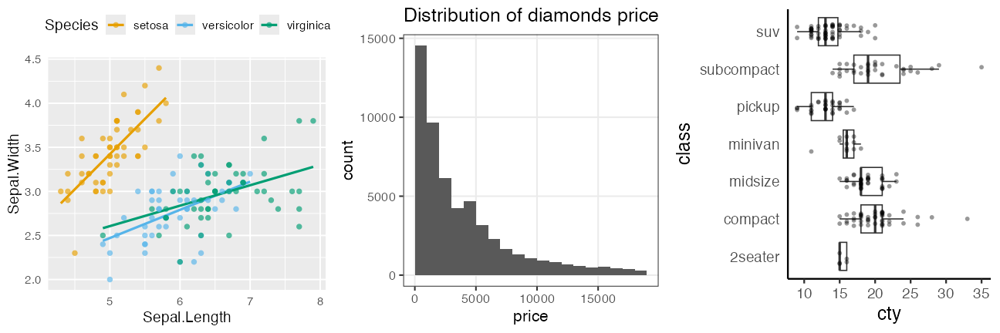
ç´°ã‹ã„è¨å®šã¾ã§è¦‹é€ƒã•ãªã„よã†ã«ã€çã§å”力ã—ã¾ã—ょã†ã€‚
個人ã§ãƒ¬ãƒãƒ¼ãƒˆã®æ¡ç‚¹ã‚’ã—ãŸã‚ã¨ã€çã”ã¨ã«ãƒœãƒ¼ãƒŠã‚¹ã‚’åŠ ç®—ã—ã¾ã™ã€‚
ãŠã—ãªãŒã: Rã«ã‚ˆã‚‹ãƒ‡ãƒ¼ã‚¿å¯è¦–化
✅ データ解æ全体ã®æµã‚Œã€‚å¯è¦–化ã ã„ã˜
✅一貫性ã®ã‚る文法ã§åˆç†çš„ã«æã‘ã‚‹ggplot2
- aesthetic mapping ãŒéµ
- 色覚多様性をæ„è˜
- ç”»åƒå‡ºåŠ›ã¾ã§ãã£ã¡ã‚Šãƒ—ãƒã‚°ãƒ©ãƒŸãƒ³ã‚°
今日ã®æ®‹ã‚Šæ™‚é–“
- çã‚„TAã«ç›¸è«‡ã—ã€æ¶ˆåŒ–ã—ãã‚Œãªã‹ã£ãŸéƒ¨åˆ†ã‚’ãªã‚‹ã¹ã解消ã™ã‚‹ã€‚
- 模写ã®èª²é¡Œã‚’
ggsave()ã¾ã§ãã£ã¡ã‚Šã‚„る。 - TAãŒçã®ä»£è¡¨ç”»åƒã‚’評価ã—ã€åˆæ ¼ã—ãŸçã‹ã‚‰è§£æ•£ã€‚
- 残ã£ã¦ã»ã‹ã®èª²é¡Œã«å–り組んã§ã‚‚OK。
- é…ãã¨ã‚‚17:50ã«ã¯éƒ¨å±‹ã‚’é–‰ã‚ãŸã„。
å‚考
- R for Data Science — Hadley Wickham et al.
- https://r4ds.hadley.nz, Paperback
- 日本èªç‰ˆæ›¸ç±(Rã§ã¯ã˜ã‚るデータサイエンス)
- Older versions
- 「Rã«ã‚„らã›ã¦æ¥½ã—よㆠ— データã®å¯è¦–化ã¨ä¸‹ã”ã—らãˆã€ 岩嵜航 2018
- 「Rを用ã„ãŸãƒ‡ãƒ¼ã‚¿è§£æã®åŸºç¤ã¨å¿œç”¨ã€çŸ³å·ç”±å¸Œ 2019 åå¤å±‹å¤§å¦
- 「Rã«ã‚ˆã‚‹ãƒ‡ãƒ¼ã‚¿å‰å‡¦ç†å®Ÿç¿’〠岩嵜航 2024 æ±äº¬åŒ»ç§‘æ¯ç§‘大
- 「Rを用ã„ãŸãƒ‡ãƒ¼ã‚¿è§£æã®åŸºç¤ã¨å¿œç”¨ã€ 石å·ç”±å¸Œ 2024 åå¤å±‹å¤§å¦
- ggplot2å…¬å¼ãƒ‰ã‚ュメント
- https://ggplot2.tidyverse.org/